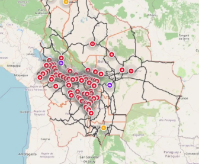
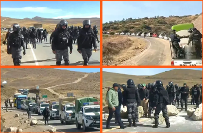
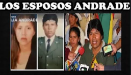
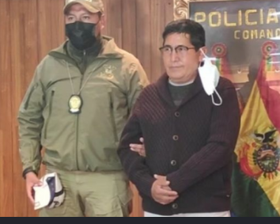

¿Bolivia está enfrentando una amenaza silenciosa?
Cuando pensamos en las crisis de un país, solemos mirar la política o la economía formal. Pero hoy quiero hablarles de una amenaza silenciosa que lleva años avanzando en Bolivia: la unión entre las economías ilegales que capturan territorios enteros y un sistema de justicia que, en lugar de frenarlas, muchas veces garantiza su impunidad.

El enclave de "México Chico"
Ubicación
Límite entre el sur de Oruro (Challapata) y norte de Potosí.
¿Desde cuándo?
Guerra territorial de 175 años , despues de 1932 y 1935 Guerra del Chaco: Los ayllus adquirieron fusiles Mauser rezagados de la contienda bélica, lo que incrementó drásticamente la violencia y obligó a muchos pobladores a migrar a los Yungas, el Chapare y Chile. Año 2000 Punto de inflexión y ley de límites , Enero de 2014: El gobierno promulgó la ley de delimitación territorial entre los Qaqachakas y los Laimes.
¿Qué pasa ahí?
Marzo de 2010 Cuatro uniformados de la Dirección de Prevención de Robo de Vehículos (Diprobe) fueron emboscados, torturados y linchados en Nucchu , Octubre de 2012 Intervención militar en Chayapata por operaciones y talleres clandestinos de clonación de placas y contrabando de autos "chutos" , Septiembre de 2016 se estrelló una avioneta Cessna 310 en Cayampani cargada de droga, la cual fue incinerada por pobladores para borrar evidencias , Agosto de 2018: Se descubrió el cuerpo de un bebé en un altar de sacrificio humano en las faldas del volcán Tata Sabaya, ritual practicado por contrabandistas para pedir prosperidad

De las fronteras a las rutas: Llallagua 2025
La fachada
Protestas políticas exigiendo la candidatura de Evo Morales.que dio inicio el 10 de junio
Denuncia comunaria
Bloqueadores externos y armados llegados desde "México Chico" Escalada de violencia e incursión urbana 10 y 11 de junio De acuerdo con los informes policiales y testimonios recogidos en la zona, los grupos de choque rebasaron a la policía local, ingresaron a la ciudad saqueando comercios y destruyendo un retén policial en la plaza principal. Ante la emergencia, los vecinos levantaron barricadas nocturnas para resguardar la población.
Peligro real
Cuando un fuerte contingente policial intentó ingresar por carretera para pacificar la ciudad, fue emboscado en el sector de Aguas Calientes y zonas aledañas mediante el lanzamiento de rocas desde los cerros, dinamita y disparos de francotiradores. En estas jornadas perdieron la vida cuatro efectivos policiales (Jorge Barrozo Rodríguez, Carlos Enrique Apata Tola, Jesús Alberto Mamani Morales y Christian Calle Alcón) y un joven estudiante civil (Vladimir Aguilar Choque) Tras cuatro días de asedio, vigilia vecinal y operativos de refuerzo con apoyo militar y policial, se logró restablecer el orden y levantar los cercos el 14 de junio de 2025

Esposos Andrade: La crueldad como precedente
Octubre de 2000 (Chapare)
Secuestro y tortura brutal del Tte. David Andrade de 26 años y Graciela Alfaro de 19 años.
Contexto
Bloqueos cocaleros bajo el mando e influencia sindical de Evo Morales. 10 de octubre de 2000 Secuestro y asesinato, Octubre de 2000 Hallazgo de los cuerpos.
Impunidad
Un crimen despiadado que marcó el ataque sin castigo a la autoridad. 2001 – 2005 Proceso judicial e impunidad sin embargo, el proceso enfrentó constantes obstáculos, falta de garantías para los testigos y paralizaciones en los tribunales de Cochabamba.

El frente interno: Caso Rafael Alcón
El fallo corrupto
El exjuez Rafael Alcón libera al asesino serial Richard Choque (condenado a 30 años sin indulto).
La maniobra
Detención domiciliaria otorgada con certificados médicos falsos. Concesión ilegal de detención domiciliaria diciembre de 2019, Falta de custodia policial
Consecuencia
Libre, volvió a extorsionar, violar y asesinar a dos adolescentes. El exjuez Rafael Alcón Aliaga fue destituido de su cargo, aprehendido en enero de 2022 (días después de la recaptura de Richard Choque) y sentenciado en marzo de 2024 a cuatro años de prisión en la cárcel de San Pedro de La Paz.

Caso de Richard Choque
¿Quién era y cuál era su condena?:
Se trataba de Richard Choque Flores, un peligroso feminicida y asesino serial. Fidel Lecón Choque (2011): Tenía 18 Desapareció el 19 de mayo de 2011. Blanca Rubí Limachi Sirpa (2013): Tenía 20 años. Desapareció el 20 de noviembre de 2013,Lucy Maya Ramírez Zambrana (2021): Tenía 17 años. Desapareció el 17 de mayo de 2021. Iris Maylin Villca Choque (2021): Tenía 15 años. Desapareció el 27 de agosto de 2021
¿Cómo salió libre?
Noviembre de 2013 (Primera captura)Chonchocoro. En 2015 recibió una sentencia de 30 años de prisión sin derecho a indulto. A finales de 2019, el exjuez Rafael Alcón le otorgó detención domiciliaria bajo la excusa de una supuesta enfermedad terminal incurable. El juez consumó la corrupción aceptando certificados médicos falsos y sin verificar las pruebas ni notificar a las familias de las víctimas, borrando en la práctica una condena a perpetuidad. Enero de 2022 (Segunda captura): Tras volver a cometer asesinatos, secuestros y extorsiones mientras supuestamente cumplía arresto domiciliario, la policía lo recapturó definitivamente en El Alto.
¿Qué hizo estando en libertad?
Lejos de estar enfermo o rehabilitado, Choque operó con total impunidad. Se hizo pasar falsamente por policía para extorsionar, secuestrar y agredir sexualmente a decenas de mujeres jóvenes, culminando su historial al secuestrar, violar y asesinar a dos adolescentes (Lucy e Iris), cuyos cuerpos terminó enterrando dentro de su propia casa.